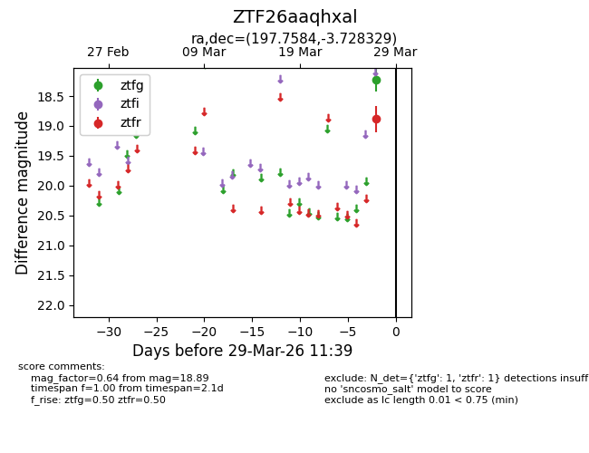
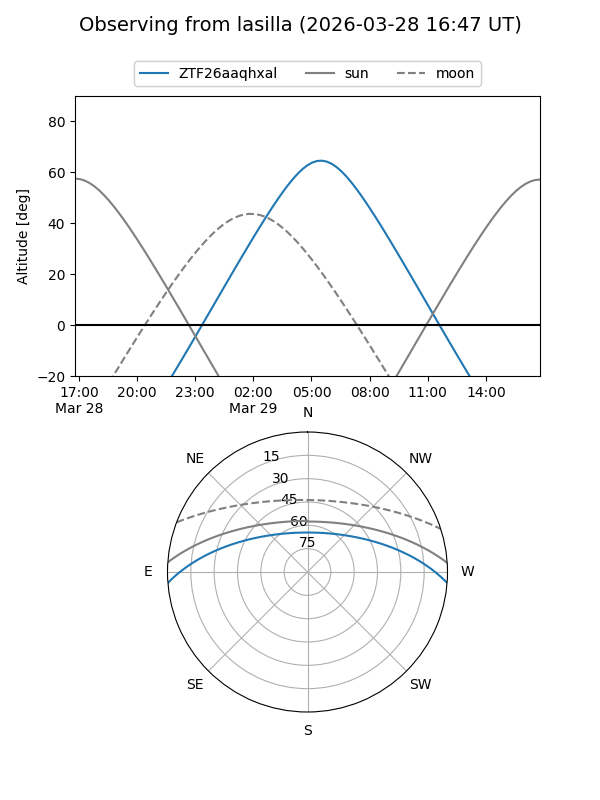
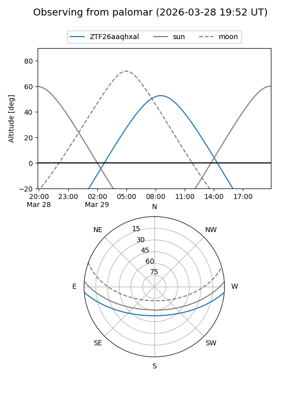

ZTF26aaqhxal
Target ZTF26aaqhxal at 2026-03-29 11:42
Aliases and brokers:
FINK: link
Lasair: link
ALeRCE: link
alt names
ZTF26aaqhxal (ztf,fink_ztf)
Coordinates:
equatorial (ra, dec) = 197.7584,-3.72833
equatorial (HMS+DMS) = 13:11:02.01,-03:43:41.99
galactic (l, b) = (312.3956,+58.78289)
Flags:
Photometry:
last ztfg=18.23, ztfr=18.89
1 ztfg, 1 ztfr detections
Lightcurve

Visibility


Additional plots